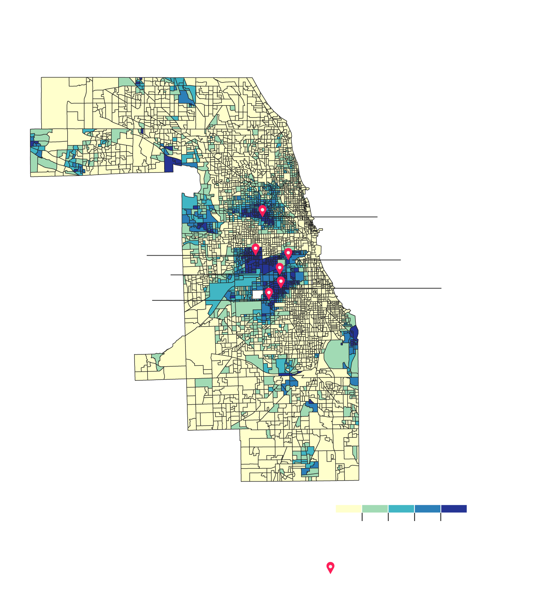
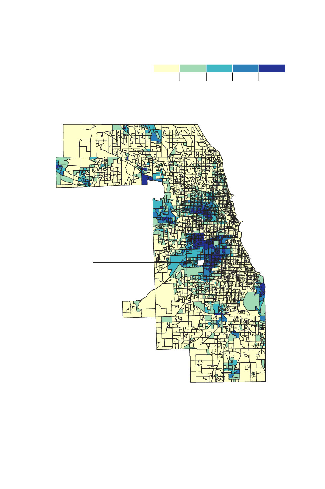
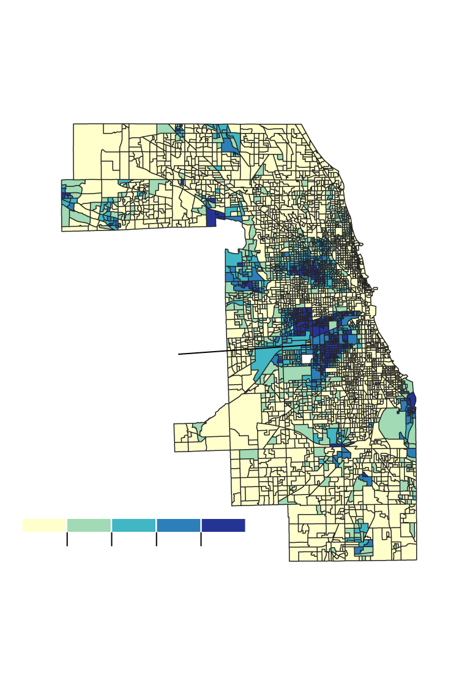

Hispanic Population Ratio In Chicago
Hispanics have bypassed blacks as Chicago’s
second-largest racial/ethnic group. The population
has emerged as the largest racial/ethnic group
in several neighborhoods.
Belmont-Cragin: 80%
South Lawndale: 85%
Lower West Side: 81%
Brighton Park: 85%
Gage Park: 92%
West Lawn: 80%
20
40
60
80%
Source: University of Illinois at Chicago
Neighborhoods with >= 80% Hispanics

Hispanic Population Ratio In Chicago
20
40
60
80%
Hispanics
are the largest
racial/ethnic group
in several Chicago
neighborhoods.
Source: University of Illinois at Chicago

Hispanic Population Ratio In Chicago
Hispanics
are the largest
racial/ethnic group
in several Chicago
neighborhoods.
20
40
60
80%
Source: University of Illinois at Chicago